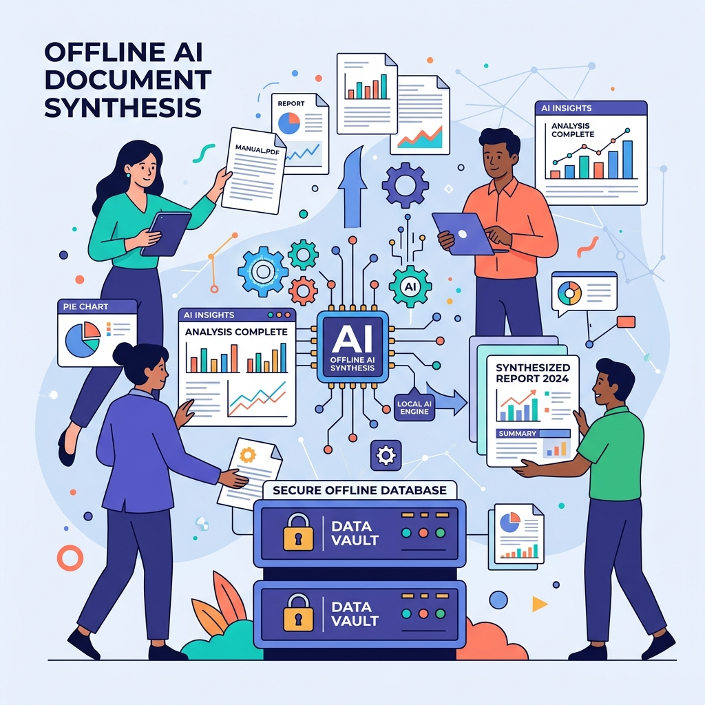

Project Blueprint
An interactive synthesis for a fully offline, locally hosted web application designed to safely extract, synthesize, and visualize document data using localized Vision-Language AI Models (VLMs) and Laravel.

Vision, Scope & Objectives
This section outlines the foundational context of the project. It details the core problem regarding unstructured data and privacy risks, and defines the specific, measurable objectives the offline architecture aims to achieve.
The Background Context
Organizations struggle to connect data across mixed, unstructured formats (PDFs, Word, Excel). Cloud-based AI introduces severe data privacy risks. This project mitigates these risks by automating data extraction and synthesis without sensitive data ever leaving the user's local hardware.
1. Offline Extraction
Process and extract text, tables, and image-based charts completely offline.
2. AI Synthesis
Synthesize data using a local VLM to output structured mappings.
3. Dynamic Dashboard
Generate an interactive frontend dashboard reflecting AI findings quickly.
Execution Timeline
This section visualizes the project schedule across three distinct phases. The chart below illustrates the sequential progression of tasks from August to October 2026. Hover over the bars to view the specific focus of each phase and its duration.
Technical Targets & KPIs
This section breaks down the Monitoring and Evaluation criteria into measurable targets. The project's success is tied to strict performance and accuracy metrics, evaluated via bi-weekly Agile sprint reviews.
Target Resource Load
Must remain under 90% utilization on 16GB RAM hardware during queue processing.
Target JSON Accuracy
100% accuracy of the JSON output generated by the AI compared to original sources.
Format Support
System must successfully parse 5 targeted file formats without crashing.
Resources & Budget Allocation
This section details the capital requirements and financial allocation to execute the proposal. It categorizes the budget into recurring operational expenses and non-recurring hardware/development costs focused heavily on local processing infrastructure.
Financial Breakdown & Capital Allocation
Infrastructure & Operations- Hardware Acquisition: High-performance workstations/servers with minimum 32GB RAM.
- GPU Acceleration: Dedicated GPUs for local Vision-Language Model inference.
- Engineering: Initial architecture development and setup costs.
- Developer Retainer: Ongoing software maintenance, queue tuning, and updates.
- IT Infrastructure: Internal power, cooling, and network maintenance costs.